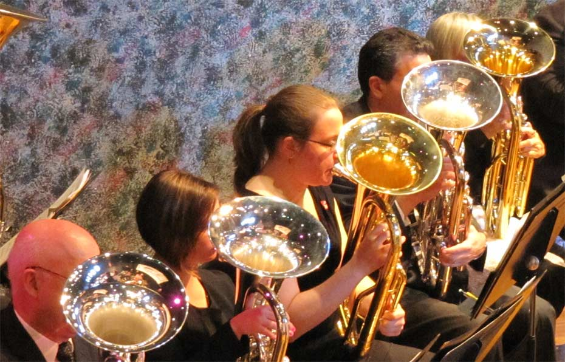

The American Wind Band (AWB) was created to promote and encourage the understanding, appreciation, and study of concert band literature through performances. The band, by presenting concerts in several venues, extends education and enjoyment of band music to all those in attendance. Benefits from concert performances allow us to extend scholarships to young musicians so they can continue their studies in the field of music performance.
The AWB is organized under section 501(c)(3) of the Internal Revenue Code.
